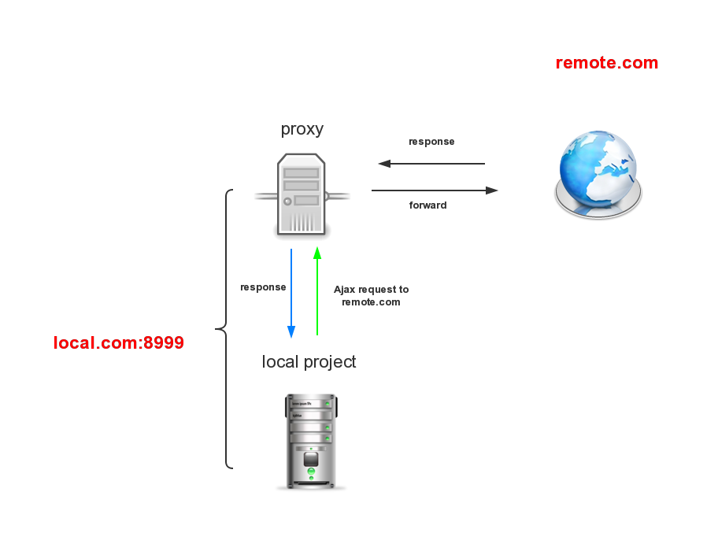

跨域
为了页面和服务器的安全，脚本是不能访问非本域的动态网络资源，但可以访问如脚本、样式、图片、视频、音频等这些静态资源。
发生跨域：网络协议不同、端口不同、域名不同、子域名不同。
// 本域：qianduanblog.com// 他域：www.baidu.com$.ajax("http://www.baidu.com");// 报错：XMLHttpRequest cannot load http://www.baidu.com/. Origin http://qianduanblog.com is not allowed by Access-Control-Allow-Origin.
使用JSONP跨域
JSONP 的理念就是，我和服务端约定好一个函数名，当我请求文件的时候，服务端返回一段 JavaScript。这段 JavaScript 调用了我们约定好的函数，并且将数据当做参数传入。JSON 的数据格式和 JavaScript 语言里对象的格式正好相同。所以在我们约定的函数里面可以直接使用这个对象。<script src="http://www.google.com/getUsers.php?flag=do&time=1"></script>
只支持GET请求而不支持POST等其它类型的HTTP请求
代理

XHL2
HTML5中的XMLHttpRequest Level 2中的API,postMessage 方法和 onmessage 事件来实现不同域之间的通信，其中postMessage用于实时向接收信息的页面发送消息。
CORS
基本思想就是使用自定义的HTTP头部让浏览器与服务器进行沟通，从而决定请求或响应是应该成功还是失败。目前，所有浏览器都支持该功能，IE浏览器不能低于IE10。
览器一旦发现AJAX请求跨源，就会自动添加一些附加的头信息，有时还会多出一次附加的请求，但用户不会有感觉。因此，实现CORS通信的关键是服务器。只要服务器实现了CORS接口，就可以跨源通信。<script type="text/javascript">
var xhr = new XMLHttpRequest();
xhr.open("POST", "/damonare",true);
xhr.send();</script>
<script type="text/javascript">
var xhr = new XMLHttpRequest();`xhr.open("GET", "http://segmentfault.com/u/trigkit4/",true);
xhr.send();</script>
主要就是通过设置Access-Control-Allow-Origin来进行的。如果浏览器检测到相应的设置，就可以允许Ajax进行跨域的访问。
CORS和JSONP对比
JSONP只能实现GET请求，而CORS支持所有类型的HTTP请求。
使用CORS，开发者可以使用普通的XMLHttpRequest发起请求和获得数据，比起JSONP有更好的错误处理。
JSONP主要被老的浏览器支持，它们往往不支持CORS，而绝大多数现代浏览器都已经支持了CORS）。
CORS与JSONP相比，无疑更为先进、方便和可靠。